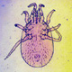
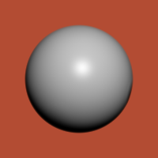
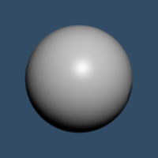
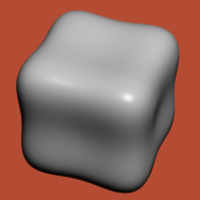
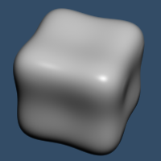

|  | ||
| teem | / | mite |
Basic miter demo |
The first command created a 1024 line file ramp.txt containing the values linearly increasing from 0.0 to 1.0. This was fed into the unu imap with control points implementing a step function, and then unu axinfo sets up the axis information so that mite can use the nrrd as a transfer function. Now we can tell miter:echo "0 1" \ | unu reshape -s 1 2 \ | unu resample -s = 1024 -k tent \ | unu save -f text -o ramp.txt echo "-1.0 0.0 -0.8 0.0 0.8 1.0 1.0 1.0" \ | unu reshape -s 2 4 \ | unu imap -i ramp.txt -r -m - \ | unu axinfo -a 0 -l "A" \ | unu axinfo -a 1 -l "gage(v)" -mm -1.0 1.0 -o val-txf.nrrd rm -f ramp.txt
miter -i sph.nrrd -o sph-rend.nrrd @cam.txt \ -ld 0.3 -1 -2.2 -am 1 1 1 -ads 0.0 0.7 0.3 -sp 70 \ -k00 cubic:1,0 -k11 cubicd:1,0 -k22 cubicdd:1,0 \ -step 0.008 -ref 0.01 -nt 30 -n1 0.99 \ -txf val-txf.nrrd overrgb -i sph-rend.nrrd -g 1.4 -b 0.2 0.3 0.4 -o sph-blu.png overrgb -i sph-rend.nrrd -g 1.4 -b 0.7 0.3 0.2 -o sph-red.png miter -i pin.nrrd -o pin-rend.nrrd @cam.txt \ -ld 0.3 -1 -2.2 -am 1 1 1 -ads 0.0 0.7 0.3 -sp 70 \ -k00 cubic:1,0 -k11 cubicd:1,0 -k22 cubicdd:1,0 \ -step 0.008 -ref 0.01 -nt 30 -n1 0.99 \ -txf val-txf.nrrd overrgb -i pin-rend.nrrd -g 1.4 -b 0.2 0.3 0.4 -o pin-blu.png overrgb -i pin-rend.nrrd -g 1.4 -b 0.7 0.3 0.2 -o pin-red.png
|  |  |
| sph-red.png | sph-blu.png |
|  |  |
| pin-red.png | pin-blu.png |
A transcript of all the commands on this page is also available: rend-sph-pin.txt. You can run all the commands by simply saying "source rend-sph-pin.txt" inside any useful shell.